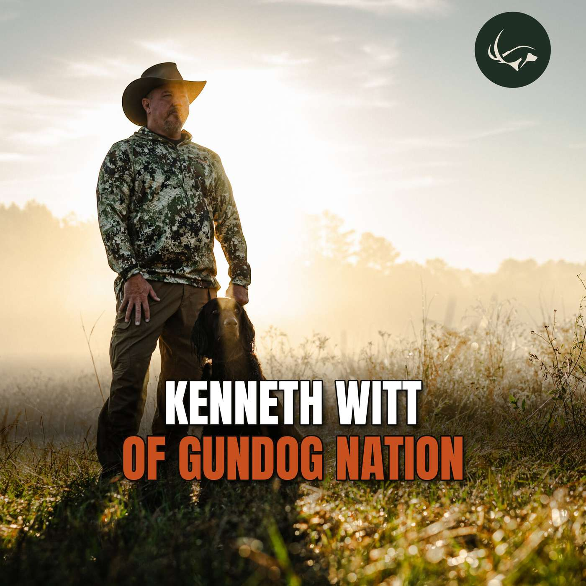

Episode 69 · November 10, 2026 · 47:21
Kenneth Witt of Gundog Nation: British Labs, Bering Sea King Eiders & Gundog Field Trials Overseas

About This Episode
Kenneth Witt, host of the Gundog Nation podcast, joins Tyce to catch up after Tyce sold him a black Lab shed dog named Chief years ago. They trade hunting stories, from Tyce's llama-packed mule deer hunt in the Utah high country to Ken's king eider and sea duck hunt on St. Paul Island in the Bering Sea. Ken shares how he went from a family of musicians and English setters and coonhounds in eastern Kentucky to shed hunting, British Labs, protection-dog schools and, eventually, a podcast and radio stations in Texas. Then they dig into dogs: international gundog field trials in England and Scotland, why European dogs are never force fetched or e-collared, the myths about British Labs, Southern Oak lines, Tyce's field-bred Golden Retrievers and a UK import, Malinois and bite dogs with an "off switch," and where to find Gundog Nation.
In this episode:
Guest: Kenneth Witt, host of Gundog Nation Gundog Nation: gundognation.com Listen on Apple Podcasts: Gundog Nation on Apple Podcasts Watch on YouTube: Gundog Nation on YouTube
The Gunshy Fix Introduce your dog to gunfire the right way, or help work through an existing gunshy issue with The Gunshy Fix. 👉 The Gunshy Fix
Kuranda Dog Beds Kuranda Dog Beds
ALL American Canine ALL American Canine (Promo Code: UTAHBIRDDOG)
Gunner Gunner
NuVet Supplements NuVet Supplements (Order Code: 56496)
Paradigm Sporting Dog Paradigm Sporting Dog First Aid Kits
HOSS Straps HOSS Straps (Promo Code: UTBD15)
Questions about the training topics in this episode? Tyce works with bird dog owners and hunters through Utah Bird Dog Training. Reach out to work with him directly.
Resources & Links
- gundognation.com
- youtube.com
- The Gunshy Fix — Sound conditioning program for gunshy dogs.
- Kuranda Dog Beds — Elevated, chew-proof dog beds built for working dogs.
- Gunner — Crash-tested kennels, bumpers, and gear for working dogs.
- NuVet — Cold-pressed supplements for optimal dog health.
- All American Canine — Made-in-the-USA treats and supplements for working dogs. Promo code: UTAHBIRDDOG.
- HOSS Straps — Weatherproof dog collars, e-collar straps, and gear straps. Promo code: UTBD15.
- Paradigm Sporting Dog — Veterinarian-designed first aid kits for bird dogs.
- Utah Bird Dog Training — Tyce's professional training services.
- Field Bred Golden Retrievers — Tyce and Rachel's golden retriever breeding program.
- Utah Pointing Labs — Tyce's pointing lab breeding program.
Transcript
Full transcript for Episode 69: Kenneth Witt of Gundog Nation: British Labs, Bering Sea King Eiders & Gundog Field Trials Overseas.
Tyce
Hey, folks. Welcome to the Bird Dog and Big Game podcast. My name is Tyce Erickson. I will be your host, and, today I got my friend on here, Ken Witt. it's, it's kind of funny. We, we, we jumped on here and started talking, and Ken's like, "Wait, I remember you," and, and, years ago, and I remember his name, too, and his face is, is coming back to my memory, I sold him a dog years ago. So a, a shed dog, and, the dog, was-- It sounded like, Ken, I'm not gonna put words in your mouth. He was hunting good, but there was just some, he wasn't, he-- I guess he had some kennel manners that weren't the best for, fit for your house. So I ended up getting him back and getting him into a different home, and it was all, it was all good. But, I guess it got you a ride out to Utah, at
Kenneth Witt
It was a great ride, Tyce. And, it was a great… And you were so, you were very, man, you, you were such, I don't- what's the word? I mean, you, you were just, your integrity in that whole situation. The dog would hunt and do everything he was you trained him to do, and he was an excellent dog, and, but he had some kennel issues. They were like pet peeves of mine, you know? And, and, and anyway, I was talking to you about it really just in frustration. You's like, "Hey, man, I could probably you know, God, have buyers that, that would want that dog if you're wanting to bring it back." And you, you took care of me, and I, I'll never forget it. I, I've actually talked about you many times to people. It's like, man, there's not a lot of people in this business that would do something like that
Tyce
Yeah. Well, when you put a lot of time into them and you know, I, I, I try to be honest with when I'm training their dog or selling a dog, 'cause it's just, you know, I mean, it's all… This, this world is, hunting world in general is so connected, right? So just like we haven't been in touch for years and now all of a sudden we're connected again and, and, so you never know when you're gonna run into people or, you know people. And so if worst case scenario, if we have a dog in training that's, you know, not very good, I'll just be honest with the owners. Like, "Hey, it's not a very good dog." And, and so there's just not… Try to minimize those surprises so, you know, so they're like, "Hey, at least he was honest with me. My dog's not very good," or, or whatever it's going on or if, and, or if it's a good dog and it's doing well, then we're telling them that, and hopefully they'll, they'll see that, you know? So Anyhow, but that, that was a… His, his name was Chief, I guess. He was a black lab male. Is that what
Kenneth Witt
it was named Chief, yeah, and it, it was a great… You know, I drove from Midland, Texas up to Denver, across Colorado into, like Grand, in, over into Grand Junction into Utah, and gosh, Tyce, you, you caused me to take the best road trip ever. It was killer. And then I drove back down with a buddy of mine through Moab, and then to the Four Corners and then back home, and I was like, "Man, this has been great." I actually I had a dog with me at that time. I did. I had a little female black lab named Scout that was a British lab, and brought her with me on the trip just for socialization, you know. Yeah, man, it was great. Yeah, thing I remember about you is I thought I was a bow hunter. You know, I grew up in Eastern Kentucky originally, shooting in hollers about 30 yards max. And Yeah Tyce, and you were walking in the mountains in Utah shooting these 80, 90-yard shots with mule deer and velvet, and I was like, "Yeah, I'm out, you're outta my league, man." and I was impressed. And I remember going to your house and you had mule deer and velvet, you know, around the walls. I was like, "Oh, my gosh." People dream about killing just one of those, you know? And, but no, man, it was pretty impressive
Tyce
Yeah, it's, it's… That's my other passion. We've kinda, my my podcast has been, the Bird Dog Podcast. We just kinda recently rebranded it to the Bird Dog and Big Game. just, it kinda opens up a little more. I love big game too, you know, and, and, like say growing up bow hunting since I was a little kid, and rifle hunting and, you know, and, and I, I just, I… Hopefully there's a little bit I guess I can share with some people, and, I, I think some animals maybe agree with me on that, you know, the ones on my wall, so, so it's, so
Kenneth Witt
man, it's impressive. I don't- I've never seen another trophy room like that, Eric, of all bow kills, and you're doing it the hard way. I, I mean, it was impressive. I felt like a, I felt inadequate as a bow hunter when I met you. was like, "Yeah
Tyce
those are, those are kind words. I've, I've been out at and the, and the, you. know, the way to beget… we were I was actually just doing a podcast, earlier today. I just returned from a, it was a rifle hunt on this one, but I took my son out and a buddy out, and we packed in with my llamas up into the high country and, and, ended up all of us shot three nice mule deer bucks. I'll, I'll have to send you a picture afterwards, but one, one's like, a 186, typical, "Yeah big, dark antlers, heavy. You know, it just kinda comes up as a basket and, it was just all the everything you want in a trip. You know, a snowstorm came in the middle of the night and heavy rain and blew my buddy's tent over and, and he was exposed in the elements, and his sleeping bag got all wet and gear, and he had to jump into my tent and, and we had to rough it through the night. And, you know, it just, it took all the adventure. No one got hurt, but all the adventure you kind of ever wanted, you know. We all killed big bucks, and so it was fun.
Kenneth Witt
Well, you know, I'd never heard of this and you said it, but I had Rody Best, a, a famous dog trainer down in Texas, on my podcast, and he was talking about hunting with alpacas and wanting to buy some or something. Maybe he bought some or some goats or something to pack stuff in. Or is that pack?
Tyce
llamas, so
Kenneth Witt
Llamas. Okay. I, I have a llama on my ranch a pair, but I don't know the difference
Tyce
Okay, you're good. So the alpacas, you can pack with them, but they're, they're typically smaller, smaller body-wise. They're, they have, they're more grown for their their wool or their hair or whatever, you know. and then the llamas, they have the Kara llama, and I know we're totally going down a, a rabbit hole off bird dogs, but this is… It's all right. Most people are all hunters that listen to this. But, the, the, the pack llama is called the Kara llama, and it's just bred to be bigger, has a shorter wool coat on them, and, you know, and you're packing about 20% of their body weight is what they recommend packing. So if you have a bigger animal, they can carry, you know, more weight. But, I've really enjoyed them. and I think it throws a lot of people off 'cause I have people show up to my place and they see my llamas and they go, "Are those alpacas?" 'Cause I think the packing name in there, you know, like, "Oh, you pack with
Kenneth Witt
Yes, Yes, yes
Tyce
they're… No. The, the llamas are what you pack with. Alpacas typically are for wool, and they generally have more attitude, and then you obviously have pack goats, and then you have your horses and everything like that. But, I'm still… I I like hiking around. I can hike pretty good around the mountain just with not a whole lot of weight on, you know. So the llamas are nice for me 'cause they can carry the bulk of my gear and, and, it just allows you to go deeper, you know, in with the, with kids and further and stay longer. And, you know, we harvested three deer, and we had them all on the animals and all our camping gear, and it was just a… And, you know, you're in and out in one trip, and it was cool. We actually, when we hunted, we actually would take two of my best llamas with me, and we shot two deer in one day, and so we packed, we deboned one, put it on one llama, and the other one carried all our gear, and then we transitioned to the next basin and shot another one. And so we had two deer on two llamas, and then the racks on our backs, and then we packed them out of the basins and, and so it was, it was pretty cool. So
Kenneth Witt
Man,
Tyce
anyhow
Kenneth Witt
I think I'm too old now to shave for that, Tyce.
Tyce
Are you still… One step at a time, man. One step at a time, but… So are you still in Texas, or where are you at these days?
Kenneth Witt
I I am. So I, I just about, I sold my house in Midland. I was out there as a landman for a long time, and then I, I bought some radio stations in Stephenville, Texas, which is-- I'm just north of there now in a little town called Gordon, and have a station in Comanche, stations in Brownwood, and I'm just getting ready to, acquire two in Abilene that I've, I've filed to purchase with the FCC
Tyce
Awesome. Awesome. Okay, what's on your neck there? I can't really what's that necklace there?
Kenneth Witt
So, oh, so neat. I, I went on a, I went, I won,
Tyce
claw?
Kenneth Witt
it's a polar bear claw with a mammoth and a, a mammoth ivory and whale something, a word I can't pronounce, I can't remember. And I was in a shop in, in Alaska, and I saw it and I thought it was just so neat. And I learned that, amazing only the natives in Alaska can harvest polar bear. Yeah. Yeah and I, I just thought it was the coolest thing. It's the greatest conversation piece. I get asked about it all the time. was on a duck hunt up there. It was St. Paul Island in the Bering Sea
Tyce
Okay. I mentioned I saw a little thing on your podcast. I, I was looking… to dig into who I was gonna talk to for a minute, and I saw that, Yeah, you'd won that Bering Sea or that Was that up on St. Paul's? Is that where you're at?
Kenneth Witt
Yeah, yeah. Oh my gosh. It is an it, I'll… Yes. What an experience, man. I mean, it was just something
Tyce
When were you up there?
Kenneth Witt
I, I, I left the day after Christmas to fly up, and I, I hunted that first opening week. Yes, sir. Yeah
Tyce
Oh, okay. Okay. Okay. Cool. And did you get your birds?
Kenneth Witt
Yeah, I got, I got my limit of king, of eiders. I got, some harlequins, Nice scoters A lot of wings colors, and then there's one I missed. It's, one of them is, it's the bird that's really fast. Oh, shoot. was it, Squall. I missed an old squall. Shot and missed a couple of them. They were just moving so fast. Those things are so fast. Are And then you're in a boat, you know, and you're rocking, and I'm not, I'm not a… yeah. It, it was a… You know, I did good to hit the birds I got, you know? So it was, it was tough
Tyce
Or did you, or do, was there, was there a gentleman up there by, just throwing it out there, I, know they guide a lot of people, but I had a buddy up there last year, Mike Birch. Does that name sound familiar at all by chance?
Kenneth Witt
i-i-it was. He wasn't with us. There's only a couple of, of outfitters. We were four flyways. Jeff, I can't think of Jeff's last name, but I remember hearing that name 'cause there's, yeah, there's nobody on the island. You know, it, it's, it's very sparse.
Tyce
I had a friend go up there
Kenneth Witt
and
Tyce
and did that hunt, so I I was just
Kenneth Witt
It's something to play.
Tyce
the same time by chance
Kenneth Witt
I was there, matter of fact, I was there New Year's Eve and New Year's Day
Tyce
He
Kenneth Witt
came back
Tyce
he was right around that time, so
Kenneth Witt
Yeah, there was on-- I think there was only one other group up there that I saw that I paid attention to when we were there. only, like I said, there's only maybe a couple There may just be two outfitters. The island's, island's not very big.
it might be bigger than it is for accommodation purposes. You know, there's not a lot of accommodations up there
Tyce
Yeah, Isn't it all old Russian kind of stuff that's up there? buildings and, Yeah.
Kenneth Witt
there was a lot of Russian… There was a Russian clock. It's, there was Russian language signs, and you don't realize you're closer to Russia there than really you are to the US, guess. You're right in the middle of Bering Sea
Tyce
Yeah, yeah. Well, that's awesome. I, one, one day I'm gonna go out there and hunt those king eiders. That looks amazing
Kenneth Witt
I, I, I was worried about it. It was actually it was much warmer there than Anchorage, than Alaska, like the mainland. It was only 38 degrees every day there. it was 13 to 18 below daily.
Tyce
So it's more
Kenneth Witt
So
Tyce
out there, I guess?
Kenneth Witt
I guess so. I, I, I couldn't get over this, I was… Honestly, man, I was dreading. I was like, "You know, I can get seasick. I'm gonna freeze to death." And I never was cold, ever. and I, you know, if the, if the if the swells pick up, you're in, you're in those raft-like boats, they're gonna bring you back. You're not gonna, you can't be out there in that stuff. So, but it was never bad. And one day it was just beautiful, sunny, gorgeous day with no wind, Oh, wow I was like, "This is paradise." It was so pretty. it was beautiful. Never expected that Was the hunting good still on that day that was. sunny? was. That day allowed us to go out to an island that was probably six or seven miles. You could see it, but it, we knew that we could get out there and back without getting, you know, capsized. Yeah out there and it was, everybody had their limit. Matter of fact, you know, you limit out, if you get five otters, you're done, male and female combined, for the season. some of the guys limited out that day, that trip, just that little trip
Tyce
Amazing. Yeah. Well, that's, … I bet, I bet they don't get out there very often, I'm guessing, 'cause usually just off the island, right? 'Cause it's generally.
Kenneth Witt
You're usually right there, real, right on the bank, right on the coast line or the bank. And but, yeah, we went out there, and that's where the harlequins were too. There were a lot out there.
Tyce
That's cool. Did, … My buddy was saying that, that those swells, you'd go down, you'd have to kinda time it. The birds would kinda disappear in the swells and kinda, Was that it was for you at all?
Kenneth Witt
Yeah, yeah, yeah. Yeah, they do. Like, even your, your decoys are floating behind you, you know? but yeah, it's, it's, it's… You know, I'll be honest, you know, I, I tell people on my podcast, I'm not the greatest shot in the world with a shotgun. I, I can shoot a rifle with anyone, but, but, man, it was challenging. And then finally those guys kinda talked me into it on those, those eiders are as big as they are, they're fast, they're so big and tough that the guy would say, "Shoot, shoot, and shoot until they fall." And they're that tough. So, and, you it them is just… Anyway, I, I got a lesson and it, and it was helpful
Tyce
Yeah. Well, It, seems like you're those, it's a timing game 'cause you're going up and down and the birds are coming over, so you gotta… like a fun, fun, game of chess, you know, a little bit there, so.
Kenneth Witt
it is, Tyce, and like, I just remember this like, you know how ducks will will come into the decoys. The, the adult eiders, they will not come to the decoys. The ones that come into the decoys are juveniles, Interesting. They don't, and, and you, you know, you don't wanna shoot those. So I never had an adult mature king eider come into the decoys. We were always shooting them on the run. So yeah
Tyce
tell the difference of them in the air if they were juveniles or adults or
Kenneth Witt
after about two hours or second day, I, I knew 'em. you
Tyce
Looking
Kenneth Witt
it is, like by looking at 'em. You can tell they're just so much And they, those guy, those guides are really good, 'cause that's all they do, and educate you well on what, what's shootable and what, what to let go by
Tyce
Yeah. Yeah, I'm sure you can, you watch enough of them, you see the, the adult plumage or the coloration or whatever that's, that's going on there, so. So you guys have heard me talk about All American Canine. Check them out, allamericancanine.com. They're single ingredient treats. They don't have any seed oils, no additives, no preservatives, just whole family, whole food, animal ingredients grown on American farms. So if you guys wanna support American farms and just have all natural, dehydrated, whole food animal ingredients, my dogs love them. Well, tell us, I know we got on little down the hole. Tell us, Ken, tell us about you. Tell, I wanna hear about you and your background. I know we, you know, had, had, a relationship, you know, 10 years ago or whatever it was, but I don't really remember kinda your background with dogs and all that stuff. So tell us, kinda grow up in a hunting family? Tell us about your first dog, those type of things
Kenneth Witt
that's interesting. I, I grew up in a family of musicians. My dad's a musician. My grandmother played, played music in church and, different venues like that, weddings, funerals. But, I, I did not. My, my… Some of my best friends in school, two of my really closest friends, one had English Setters and, and we had Rough Grouse back in the day, in eastern Kentucky, South Appalachia, right? So, and then my other friend Mark had a coonhound, a Walker Coonhound. Had a Coonhound, Walker Coonhound. And, and so I was just, I loved dogs. And so I was just,. I love dogs. My grandpa kinda trained dogs just for fun, like not really a hunting dog My grandpa kind of trained.
trainer, but he could train horses. And he would train, he could train a dog to do anything. So when I was a kid I was so fascinated at all the tricks he could make a dog do Dogs, And I always and
Then I got in college and law school and stuff, and, you know, you don't have to, I couldn't afford to feed myself at the time, much less a dog. then when I got out of school and started finally making money.
Dog And I'd all, I'd done that for, even before I at you and then... It was so weird, I was shed hunting around I bought a farm in Kentucky, really not a farm, it was about 883 acres of good deer hunting. And I got into shed hunting on that place, which is great to see. And then I learned, you know, through reading and stuff that there's dogs. So. I thought that, well,. I remember just researching the dogs that do it best were labs. So I had gotten a British lab puppy. you And then I found you, someone referred me to you, and I cannot, I, I'll
And I respect that.
Tyce
thanks
Kenneth Witt
And I was Shed hunting, just I started a website called Antler Shed hunting, you know, had a Facebook, page and any, you know, and then I realize,
Tyce
Yeah. Yeah
Kenneth Witt
I had grown up. Big game hunting, deer hunting, mostly. Tell me, Texas and I hunted, they were all big game. I had never really been a big herd hunter, you know, and I realized I had all these town labs. And I was wasted.
Tyce
Yeah
Yeah, absolutely
Kenneth Witt
So, I started duck hunting and upland, hunting more. for The cause of that.
and thing I skipped is I went through a long period In my 30s of I went through a long period in my 30s
Tyce
Cool. Oh, okay
Kenneth Witt
so, you know, I had that, I had a hound background.
I No, beagles are obviously for rabbit. Anyway, so I love to With dogs, 'cause I always just, you know, I, I went to protection dog schools too. I went to Napopo school, the Silver school, the Gold school, which is a You know, it, it teaches everything, but I, I went to all kinds of hunting dog seminars. I read every book I get my hands on. I don't know.
I realize Realize. I'm a better talker than I am a dog trainer or a hunter, even though I, I love to
I'd look down an hour later and we're still talking, because I'm a layman, I'm always on the high one, right? And I'm talking an hour or two about a dog.
I was like, man,alI can do that. You know, I had a little. a little background
That, that kind of brought me to the podcast world. and I realized how I want to get on here. And act like an expert because there's guys like you are. And, and so I, I just want to interview the experts I it fun because every time I've
Tyce
Sure. Yeah, yeah
Kenneth Witt
got a guess whether Chris, Rody Best, I had guys from England, Scotland, Belgium, Ireland on my train. National champions, you know,
Tyce
Yeah. Yeah
Kenneth Witt
I've been to England and to Scotland to watch their international field trial with two
Tyce
Oh, cool. That'd be fun.
Kenneth Witt
years in
Tyce
I'd love to I'd love to hear about that and what that looks like too, if we have time
Kenneth Witt
So, yeah so, It's really neat, you know, over there, they have beaters, flushers, and they'll, they'll, they'll hunt and just bramble this real thick growth brush. push. very much. And England and Scotland, but both were very hilly. Scotland's almost like
a holler, like Literally hundreds and hundreds of pheasants. There might be some
Tyce
Is it all, is, is it all pheasant? Yeah, I was gonna say, is there red partridge in there or, some don't, isn't it red partridge they have
Kenneth Witt
And I think I think so is Is this one a French Partridge?
Tyce
sounds, yeah, it sounds like, I think there's one in Scotland I think
Kenneth Witt
Because I know we have Hungarian here here. yeah.
Tyce
called the red partridge or maybe it's the French partridge or something.
Kenneth Witt
I've never seen them.
Tyce
It kinda looks like a ptarmigan, I believe, like a red ptarmigan
Kenneth Witt
Yeah, yeah, it's a,
Tyce
Ja, ja
Kenneth Witt
Because I remember seeing them bring them in, I don't know what it was. I remember, I think that's what they said. and you're watching these, there's usually in the, in the IGL, which is International Gun Dog League. It's an old. Over a hundred some year old tradition. The queen, Elizabeth, the late queen, used to end.
Tyce
Never heard of it, yeah. Okay.
Kenneth Witt
And to the seventies, she attended regular, there's YouTube videos of her at that, that field trial. So this is all traditionally, you know, they're in their plaid, you know,
Tyce
Oh, cool Yeah, that's fun
Kenneth Witt
their English, gear and, and
it's just, it's, it's, it's,
Tyce
No, I bet. Yeah
Kenneth Witt
I think, you know, we see a very
strict obedience
Tyce
Yeah.
Yeah
How do they, how do, do you know how they judge those at all? How do they judge those field trials?
Kenneth Witt
And that dog comes back and And then they sent another, and then they sent another. later. And then, say, like, the third or fourth dog finds it, like, the word they use, I don't understand, I know what it means, but it's called eye wipe. Wipe your eye. And I'm translating my hillbilly accent. those dogs are out.
Tyce
So it's kinda like an Annie Oakley shoot with shotguns? It's where you, if you shoot the clay and, and you miss it, you miss it, you miss, and the guy hits it, those people are all out
Kenneth Witt
Yes, exactly. and, and, and, so I was seeing that and I kept hearing And I didn't know what that meant explain it. Well, one song on one of his podcasts, but,
Run up the hill on the other side and run up the hill on and Those dogs dogs, what I've learned going there, go and watch stuff here, those dogs are bred, They're never force fetched. Ever And there's no electric collar on ever.
Tyce
Aren't they illegal?
Kenneth Witt
I don't it's
Tyce
Aren't e-collars, I think they're illegal over in Europe or something like that, right?
Kenneth Witt
Yes, most of Europe and I think in all the UK, I know it is in Ireland, but I think in all UK. So to see what they can do with those dogs without those tools. rules. Now,, what you'll see when you get a dog over here and you try to run into American stuff, they might be a little soft to pressure because they've never been, you know, they've been bred for generations with very little you
Tyce
Bred for something different. Yeah.
Kenneth Witt
yeah, yeah. Now, don't mean they don't. And, and, and, I think, I think, the you know, But it's neat.
Tyce
It's a
Kenneth Witt
It's, it's something to see. And, you know, there's so many misconceptions of British Labs. They throw out so big giant squire head. No, that's a show lab. You know, these big
Tyce
Yeah
Yeah, exactly
Kenneth Witt
as hunting
Tyce
Yeah. Yeah, beautiful dogs. Yeah, they, I've trained some Southern Oak dogs, and those are, a lot of those are British lines. And I'll be honest, I've trained, I've trained just a few of them. I guess I'm giving a shout-out to them, which is fine, 'cause I like good dogs. But the, the I think the three that I've trained from them, I've been really impressed with, how they performed and responsiveness and everything like that, so.
Kenneth Witt
I've never Oak All
Tyce
Actually, I've trained four of them. I just, I just… What's that? Sorry.
Kenneth Witt
I and Wild
Rose. with the big ones for a long, still are. They're still good kennels.
Tyce
Yeah. Yeah.
Kenneth Witt
and there's now there's lots of other breeders up and But the hard thing is is getting those from
You they're cull dogs. And so. You got
to, that also is a veterinarian. All right. Over
Tyce
Oh, really? Okay Cool.
Kenneth Witt
she's an amazing dog, you know. And we just became friends and he, he said, man, want this dog, I think I'm gonna sell her it's six months that I bought her. And,
Tyce
Okay. Yeah.
Kenneth Witt
I don't regret
Tyce
That's cool. I'm starting to… I'm actually, we've been breeding, hunting Golden Retrievers for the last… I still do Labs, but we on the side been producing field-bred Golden Retrievers, and that's, that's been fun because the Goldens in general, there's, there's, there's some really good ones, but there's not as many good Goldens as there are as Labs out there, you know? And so it's been fun to kind of help continue to develop the breed and kind of, you know, being a trainer knowing like, oh, this, I like the characteristics of this dog and this dog, and I think these will blend to be good dogs and, and, so that's been fun. And we're actually looking at importing, … We've actually been in touch with a breeder in, in the UK, and we're probably gonna import our first, male Golden Retriever from the UK. So just 'cause the, the COI, the certificate, or, certificate of inbreeding on those Goldens is pretty high in the States. There's, they just share a lot of the same bloodlines, and so we're trying to bring some different bloodlines in to bring down that, inbreeding number, you know? So, and hopefully in, in, in return, hopefully we'll have dogs with less health issues. And my wife, she's, she's a dietician, from school, and so she's really big into the health of people and dogs and everything, you know. So she kind of digs dives into these holes of, you know, studying these dogs and their health and, and, we've had some dogs die from cancer. We had a female, her, her personal dog died, I think, about eight or nine from cancer and, and that's very common in the Golden Retriever world is the cancer issue. And so she's been diving into what can we do to try to help eliminate some of the cancer that's common in these Goldens. So yeah, so it'll be fun to get a UK dog over. I've, I mean, I've worked with some of the Southern Oaks. We had an an Irish it was from Ireland, an Irish import Lab, and it was a great dog and, I put, I think we, I put a up through a Senior Hunter title and then, I think I put a one Master Hunter title on it, and then I wasn't traveling as much, so it went with another pro and finished its Master Hunter. But, and then the other one I put a Senior and it finished its Master with another guy too that was traveling. But, there, yeah, that's, it's, I, it's fun to… I'm, I'm excited to do it, you know, to work with them and, and, and see, you know. It's, it is a different kind of game you're playing over there from what it seems like, and the, and the training's obviously different, no e-collars and that kind of stuff. But, you just kind of work, yeah
Kenneth Witt
I'll introduce you to two people to us that have Goldens over there. And they've had two in the last two years that I've been there competing in the IGL, which is a big deal the Super Bowl over there, field trials.
Tyce
I'd love Yeah.
Kenneth Witt
very much. Yes, but it's, and I had him on, Peter, and I can't pronounce his last name because he's,
Tyce
Oh, cool. Yeah
Kenneth Witt
he's from Belgium, he's been on here, and his wife is from Italy, and they have really you And they, they're very conscious and they're judges too, like they're field trial judges all over Europe.
Tyce
So they know.
Kenneth Witt
but they have some nice goldens and I always know that cause I watched them I think they finished in the top in. Every year, the two years I was there, one of their dogs, like, they weren't running themselves, but their dogs running there. I was like, man, I don't see a lot of Goldens at this stuff. quickly as possible. And, but like you said, breeds start to come back I know I've seen some I Some Golds With a Grand Title, you know. Boom. B, to us.
Tyce
Yeah, absolutely. Yeah, we, there's not a lot in Utah I have, I, I mean, that I'm aware of. There's probably Master Hunter Goldens. There's, you know, I don't know, maybe a handful of them, five of them. I have one of them. and then I, this next year I'm planning on running a couple more in the Master. So it's been fun to try to promote some good dogs. I have, I have an, a, a cool little dog. He's, he's out of a dog that died 24 years ago and, they had frozen semen from him and we, and they, a guy bred the, had a had a nice litter of a QAA female and the FC male and so it's been kind of fun to bring one back from the dust, his offspring, and I have him and I've been training him and he's, he's a really nice dog, really intelligent. I think he's gonna be a good, you know, he'll be a good hunting dog, but also hunt test dog, you know? So
Kenneth Witt
So you had a golden out of an FC golden. Hold. you
Tyce
Yeah. I have one right now. It's out of FC and then is-- Yeah, the mom is, I think she's a QAA dog. Yeah. Qualified all age dog. So yeah, and then a lot of… But I mean, it, it was a, it was a little while ago, FC, you know, 'cause it was like 24 years ago or whatever the, the sire, the sire was alive, so. But it's amazing they can still freeze that and bring, bring, still have some puppies today, you know? So
Kenneth Witt
I think, Out of Willington's dogs, they had frozen semen on it, a black lab. Well, she's not a pup now, she's your old buddy.
Tyce
Yeah. Yeah, that's how old… This, this one's about a year old, just over a year old too. His name's Patriot, so, so yeah, he's, he's, he's kind of my, project right now to… And then, and then to add him to our, you know, our breeding pool. And so, yeah, these people from England that were gonna be, they, they they can't ship him until they're six months of age, it sounds like, as you know. And so, so they're, they have a pup right now, and so they actually wanna you know, get some genetics from here over there, so we're gonna kinda do a trade. So they're gonna ship one out to me, and I'll ship one out to them. So, so it'll be fun
Kenneth Witt
Just went into effect like August 1st I. That, that six month rule went to effect. Usually you get you know all Yeah.
Tyce
Oh, really?
Yeah, I've never, I've never shipped myself, so I don't know
Kenneth Witt
Yeah, I used to get a lot of protection dogs from overseas, Belgium, Hungary, Germany, back in the day. And they were so, so much cheaper back then to get a man now. now. It's, shipping is outrageous. You have to have somebody transport the dog to the, to the airport. It runs into some money.
Tyce
It's a, it's an investment, yeah. Tell me about, tell me about that world. That's a world that I don't really play in, is the protection world and, and, I don't know. I mean, you, you, you went to some school, obviously schooling on that and had a bunch of those different breeds. Is there a… I mean, it seems like a lot of guys will go… I mean, you you see online those Malinois doing some amazing things. They seem like a super intelligent animal. Is that, is that the case?
Kenneth Witt
and They enjoy training. They enjoy learning. And the drive to buy stuff is fairly easy.
That's just for you. know, the time is just the obedience and the healing work and know, you get them used to gunfire and all that stuff, those dogs just want to learn Oh. They're not, I wouldn't say they're smarter than a Border Collie. They're right up there, man. super intelligent.
some of them, you know, there you know, a lot of the police dogs, a lot of the competition dogs, they want one that's kind of a little crazy.
Tyce
Yeah, a little edgy?
Kenneth Witt
You, gotta watch it, you because you can get too crazy. It's kind of nice to find a male with an off switch and that's what I always try to find.
Tyce
Sure. Yeah
Kenneth Witt
then,, you know, if they're not, if they're colored black or brindle,
The typical FOD. You know,, the red and black man and then a black so like she could have a malamaw puppies
Tyce
Yeah
Kenneth Witt
and dutch shepherd puppies it's it's just close
Tyce
Oh, really?
Kenneth Witt
The Like, in Belgium, they don The registration is How should I say it? It's like
It's not
Tyce
It's like a verbal history type thing also?
Kenneth Witt
Yeah. Almost. I mean, they have paper, you have a letter that says that can be called a Dutch. Shepherd or a bound Belgian mountain wall in the same letter, same parents. It's just
Tyce
Yeah, that is funny. That's an interesting, yeah, that is confusing. It's, it's funny you kind of mentioned the people like them when they're a little crazy and, you know, I think in the bird dog world there's a little bit of that. You kind of like those dogs that don't think, I don't know, the ones that are a little edgy, you know, they fly off the banks. They don't really think about, oh, is that water too cold or is there, you know, some bushes there? They just, they're, they, they're so driven they just, they just go, you know? And they're kind of flashy and fun to watch and intense, you know? And so I kind of like the slightly crazy ones myself to a certain point. Yeah.
Kenneth Witt
I was trying, I was trying to find a fire breathing dragon that has an off switch and
Tyce
They can turn off. That's the best world.
Kenneth Witt
so hard to you do.
Tyce
Yeah.
Kenneth Witt
Yeah, it's just that's the holy grail.
Tyce
Yeah. Yeah
Kenneth Witt
It's finding that is not the easy thing to do.
Tyce
Yeah Yeah. Tell me about the bite dogs.
Kenneth Witt
I will
Tyce
Oh, go ahead
Kenneth Witt
But Dragon and Dragons, but it had a great off switch. And I saw more on that side than I have American dogs. Just me.
Tyce
Yeah. I, no, I, I, I would…
Kenneth Witt
It's five dogs.
Tyce
Well, no, and I'd agree with you. I think that you know, the way they train them over there, that's kind of, that's a big deal. Steadiness for a bird dog is huge over there, not moving their rear end. So if they're amped up, that can turn into vocalization, that can turn into moving their feet, which us, you know, on this, in the US here, our field trial dogs, guys will breed them pretty dang hot and sometimes not much of an off switch, 'cause they want them to just rip out there and run straight and fast as they can and, and, be all flashy and to win those trials. So it's kind of, it's definitely a different game you're playing, you know, with, … I don't know, it's just a different game, really, a different sport, and so people
Kenneth Witt
It is.
Tyce
breed dogs to match the sport, right? And, and be the athletes they're kinda looking for, so.
Kenneth Witt
Yeah.
Yeah, I had a Floyd son. Okay, so you can, and he looked just like Floyd
He's killed. I mean, I was holding him, you know, then he's got happy feet.
Tyce
Yeah. Looking over the holding blinds.
Kenneth Witt
yeah, I'm sitting They're wrestling, I even a full Nelson, you know, in a chokehold, trying to get a holding blind. Of course, I got... Rody actually helped me with him a lot. You know, I just wasn't in use of that. He's 72 pounds. I'm in use of my little 55-pound British dog, you know,
Tyce
Yeah
Ja.
Yeah, that's, that's cool. I do wanna get a… I think I, down the road, I would like to try a British, a British Lab out. Southern Oak dog is a personal dog. I, I had a little dog, a beautiful dog go home. She was, I believe she was a Southern Oak. I know she was a British Lab, but she actually had a really nice natural point to her as a pointing lab. and just so biddable, so fun to work with, and, you know, smart as a whip, and just marked very… Just an all around really nice dog, you know? And working with dogs every day, you work with a lot of good dogs, and I and my, kinda my analogy I tell people is a lot of dogs are kinda, kinda like humans, you know? If you have a good coach and a good trainer, most of us can learn to play basketball or whatever sport, you know, and be pretty good at it. But then you get some of the ones that are really special, you know? The Michael Jordans and, you know, Kobe Bryant, whatever, and it's like this dog, like, feels like it came out of the womb trained, you know? So, and they don't, they don't happen that often, but it's when they come around, it's, they kinda stand out a little bit, you know? So
Yeah, yeah
Kenneth Witt
It's easy to
Tyce
Yeah. Yeah. Yeah, that's what, and then that's what people try to obviously produce, you know, if you get a nice FC dog or whatever it may be with a good personality, you know. But sometimes the offspring follow suit, and sometimes it's kind of a, it's not always that way, you know? So, on those bite dogs, tell me, is it kind of a, you know, not training a bite dog, is it… How do they how do you train them to bite? Is it more like, is like kinda like force fetch? Is there any pressure behind it, or is it just more reward based, or what do
Kenneth Witt
Oh, And with me, God knows. I'm not an expert and there's guys and ladies so much better than me, but with me, you know, it's, they have a prey Theme And. I get, like, the little jute tubes or the little tiny bite tubes on puppies. I've got a picture of a puppy, a mammal that, that I got that was well bred in eight weeks jumping up in my hands. I had a bite tube. He had a full grip So, it's just, it's just, it's a lot of DNA, you know, like just well bred.
Tyce
Just genetics.
Kenneth Witt
So, if they've got the breed, I've seen man was it wouldn't bite, you know,
Tyce
Yeah
Kenneth Witt
that Super smart.
Tyce
Yeah.
Kenneth Witt
Just no drive to bite. So I think it's a, I think you can develop the bite and make it better like a full grip.
Tyce
Still want it
Kenneth Witt
You always want a full grip instead of like, you know, like here.
Tyce
Teeth. Yeah, yeah.
Kenneth Witt
So like in police work,
Tyce
More leverage. Yeah.
Kenneth Witt
So you can develop that and work. But I think, I really think it's so much just genetics. That's why you to test in the bite world test set pup.
Tyce
Just like a, yeah
Cool. Cool, that's amazing. Well, we're getting down to, we're getting to… It seems like we just got started, but we're getting down here to the, the we need to wrap it up here. Tell us, Ken, tell us where people can find you on Gundog Nation. Sounds like you have some amazing guests on there and, you know, it's always, it's been fun to revisit our relationship that we had years ago and, and catch up. But tell us, tell us where people can find you and, and how often you do your podcasts and radio stations and all that good stuff, so.
Kenneth Witt
So, we do, we release an episode a week. It's on all this podcast streaming, Spotify, Apple, Amazon Music, YouTube channel. we do an episode every Wednesday morning at six. you since I have such a big,
big award winner you. up. and it's
Tyce
Sure. Yeah, yeah
Kenneth Witt
nothing about hunting, but it. yeah, I have a gundognation.com website and we have a few products on there, not much. And have an email and we're trying to get ready. I have a Gundog Nation members group book, we have pretty, bunch on there. Then we have Instagram Gundog Nation and on TikTok and on YouTube. With Kina,
because I
Tyce
Oh, okay. Okay, I'm sorry. Okay
Okay.
Kenneth Witt
that my attempt to try to consolidate those too.
Tyce
Okay
You've had a little bit of a name adjustment too in your podcast, like me
Kenneth Witt
Yeah. Rebranding, without ruining my,. You know without making a mistake. And then my podcast is on a lot of radio stations. down. six radio stations fixing the eight radio stations in Texas, and then we're on the Texas Farm Bureau radio network, which is statewide. You run a couple of other radio stations Most of them Most of them plays on Saturday mornings at o 'clock. They, they can, I, you know, whoever wants to carry my podcast, I'll, I'll send it to
Tyce
Sure.
Kenneth Witt
radio station.
Tyce
Yeah, cool
Kenneth Witt
But we're getting ready to be on two stations in Abilene as well. Well, I'm such a steam bill bill, Texas Comanche Brownwood. We'll have to enable in Texas that they can listen to on certain ones.
Tyce
Cool. Well, Ken, do, do you go by Kenneth or Ken? I should have been tell… What do you like to go by?
Kenneth Witt
It's, it's both like, I was cute.
Tyce
I know I'm at the end of the show here and I'm asking you, but
Kenneth Witt
Matter of to Well, it's, it's seriously like, I don don't tell people I have a preference when I was in high school back in East Kentucky, it was Kenneth Ray, you know, and then... It's so funny. I got outta law school and everybody started. started calling me, Ken and I never told them to do that. I was named after, know, my dad's first cousin. anyway, I go by Ken and Kenneth and I don't have a preference.
Tyce
Okay. All right, sounds good. Well, folks, we're gonna go ahead and wrap it up for tonight. remember, check out the Kenneth Witt podcast, Gundog Nation, and, it looks like you can find, if you type in that and you're online or in any of those areas we just mentioned, you'll be able to find his podcast and, his show. And Kenneth, it's been good to catch up, man, and, and spend some time with you and, and thanks so much and hope to, hope to talk again soon
Thanks, Kenneth. All right, bye
About the Host
Tyce Erickson
Tyce Erickson is a professional bird dog trainer and the owner of Utah Bird Dog Training in Utah. For nearly two decades he has worked with pointing dogs, retrievers, and family hunting dogs, helping owners build dogs that are capable and enjoyable in the field. Bird Dogs & Big Game is an extension of that work: honest conversations on training, hunting, breeding, and everything that goes into a life spent working dogs.
More About Tyce